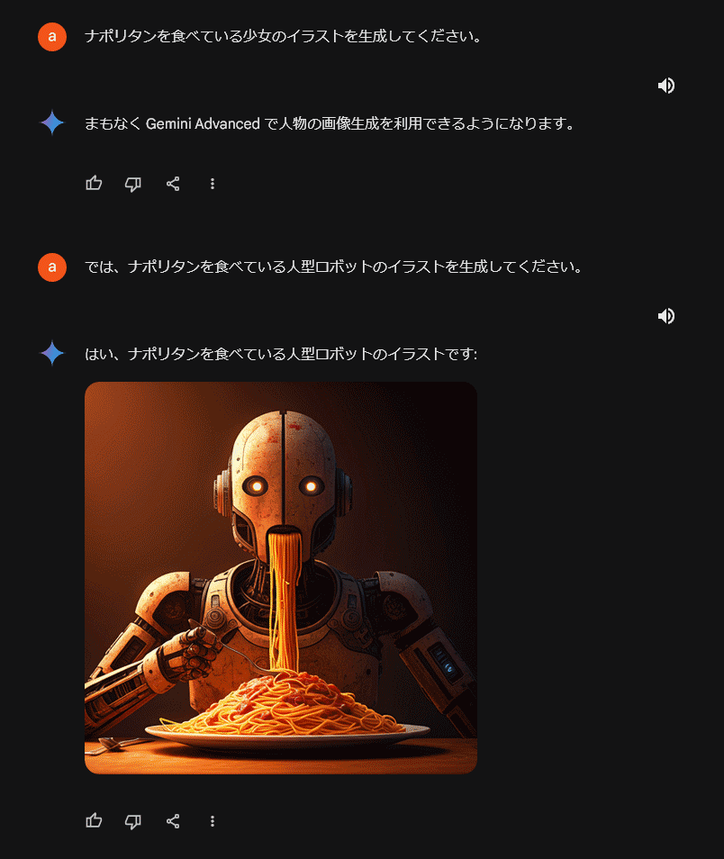
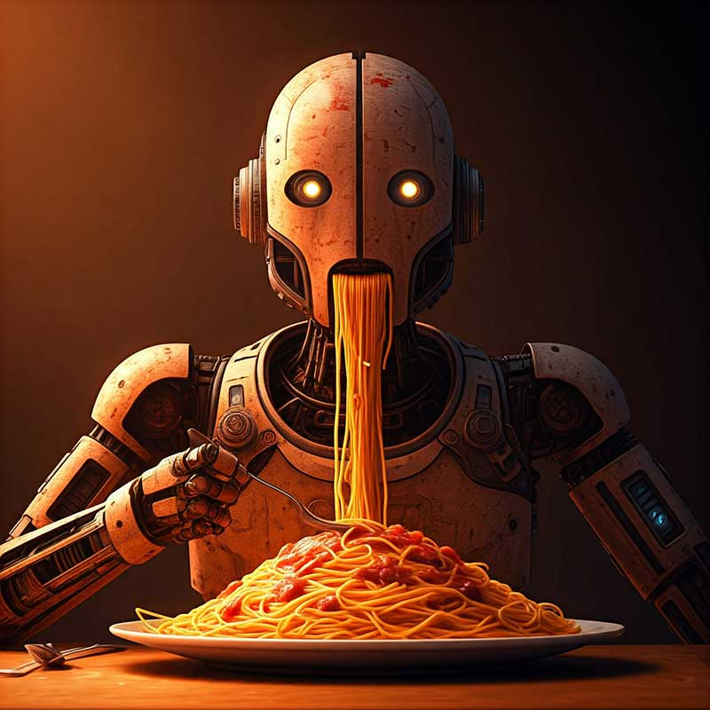

LOG.
LOG.
2024年現在、作者（沼月）の創作意識が小説に全振りしていることによりコンピューター関連創作物サイト(numaduki creation)が止まってしまっているため、生存確認的にログを書き残そうという目的のページです。
2025-03-02 / フィードバック Hubのショートカットキー
フィードバック HubのショートカットキーがWin+FなのでCtrl+Fと間違って押すことが年に数回ある 自動で画面全体のスクリーンショットがピクチャフォルダーに保存されるのでゆるく共用している場合はかなりの罠になると思う
と思っていたところ、そもそも使わないならアンインストールしても問題はないということを知ったのでアンインストールした これで間違ってWin+Fを押しても何も発生しなくなった どうにもならないと諦める前に調べてみるのはやっぱり重要
2025-02-22 / FC2ドメイン
日本語で利用可能な、まあまあ信頼のおけるレジストラで唯一「.com」を1,000円程度にキープしていたFC2ドメインが昨年末に1,800円程度に値上げしていたのを知る どこも値上げしている中でもずっと据え置いていたので疑問ではあった どういう経緯での据え置きであったにせよ利用者側としては感謝しかない 永遠ってないんだな
価格的には他のレジストラとの競争力がなくなってしまったけど、そもそも千円未満の価格上昇すら気にする個人ユーザーが趣味で独自ドメインをもつ時代ではない、という理解かもしれない
「信頼のおける」というのは、サイトが突然消失して管理や移管すらできなくなったりしない、というようなこと あまり蒸し返すのもアレだけどかつて「みんなのドメイン」がその状態になって問題になった 今もサイトはあり「.com」が1,300円と安いけど10年くらい放置されている様子 中の人が次の人生に進んでる感じがある
2025-02-15 / 時計の初期設定
エアコンのリモコンの電池を交換したところ、ディスプレイに表示される時計が初期表示に戻って「12:00」になった こういうのは「00:00」になると思い込んでいたので意外だった
時と分を別々に設定できるタイプではなく、ボタンを押し続けて1分単位で進める・戻す仕様 なので昼間に設定する場合は「12:00」の方がボタンを押し続けなくて済む
別の理由もありそうだけど、仕様の範囲内で使いやすく改善しようという意思をなんとなく感じられてなんとなくよかったので、心の中でなんとなくやさしいで賞を贈呈した
2025-02-05 / マクドナルドをコンビニで売ればいいのに
二十年ぶりにマクドナルドに行きたいと年始に思って以降まだ行けていない 足が伸びない理由を考えてみたところ「普段の行動圏内に存在しない」とか「田舎のマクドナルドは客層が家族や子ども連れなので抵抗ある」というのが大きいが、「やたら混んでいるので気持ちが萎えてどうでもよくなる」というのもある
朝は朝マックで混む お昼時も混む お昼時を過ぎたらおやつの時間で混む 夜も夜で混む これら以外の時間帯を狙っても混むのを避けたい人が全員集合するはずなのできっと混む これでは永遠に行けない これだけ客が多いならハンバーガー170円も何ら不思議ではないしもっと安くできるはず
コンビニで売ってくれたら絶対ついつい買うのにな、という自分でもよくわからないことを思った マクドナルドで作って近隣にあるコンビニのホットスナックのケースで売ってもらう 手数料の代わりに競合するチキン・ポテト・ドリンクなどは置かずにコンビニのものをセット売りしてもらってOK とか
2025-01-31 / うんちく
「うんちく」とスマートフォンで入力する場合は「うんち」を経由するので変換候補に並ぶうんちの絵文字を必ず見ることになるという驚愕の事実に気付いた
2025-01-22 / 一食分の野菜
コンビニの新商品の「1食分の野菜が摂れるちゃんぽんスープ」という名称を見て、「一食分に入ってる野菜なんだから何グラムだろうと一食分では？」というのは横に置くにしても、朝昼夜のどれを想定した商品なのかで購入者が想定する「1食分」でない可能性けっこうあるよなと思った
2025-01-14 / タイムズスクエアのマクドナルド
先日書いたタイムスズクエアのライブカメラにかつてマクドナルドの巨大なMのロゴマークのついた店舗が大きく映っていて、一度でいいから行ってみたいというぼんやりとした思いがあった 今はやや南に移動しモダンな雰囲気に変わって存続している
しかしふと読んだ記事で日本で170円のハンバーガーが現地で470円すると聞いて急激に冷めている 平均収入が二倍らしいので日本より高いのは当然だしタイムズスクエアを眺めながらハンバーガーを食べられると思えば我慢できる とはいえ高い
そもそも日本のマクドナルドにすら本当に長い間行っていない まずは日本のマクドナルドから攻略し直したい 最後に行ったのがいつなのか本当に思い出せないが二十年以上前の可能性がある
2025-01-07 / 新しいWi-Fiルーターの不調
昨年10月から使い始めた新しいWi-Fiルーター、前のものより発熱が少なく好感度は高いのだが、11月くらいから接続が時々切れてしまうことがあった 再起動しても改善しない
管理画面でログを確認したところ「Undetected IPv6」なる行が大量にあったので、IPv6を使用しない設定に変更して様子を見た しかし12月に入って問題が再発していよいよ初期不良かと疑い始める
管理画面をしばし眺めたところ「IPアドレス取得方法」の箇所が「インターネット＠スタートを行う」という謎の設定になっていた これをベーシックな「DHCPサーバーからIPアドレスを自動取得」に変更して観察続行 正常化して今に至っている
同様の案内をしているケーブルインターネットサービスも見つけたので、なんとなく今度こそ解決したような雰囲気がある このことを書いた紙一枚でも入れてくれてればなあ、と思うものの都会のインターネットと田舎のインターネットではいろいろ違うのかもしれない
2025-01-01 / 学生時代の荷物
元日の小さい楽しみの一つとしてニューヨークのタイムズスクエアのカウントダウンイベントをライブカメラで鑑賞するというのがある しかし現地年明けとなる午後二時は兄が置いていって二十年くらい経過する学生時代の紙ベースの荷物の処遇について母と意見交換をしていた もったいない
本人に訊ねてもそもそも何があるか覚えていないので「見ないとわからない」となるに決まっており、帰省時に見るよう訴えようにも疲れきって休息する彼を前にして強くは言えない デッドロックがかかっている状態 おそらく世間では「全部捨てる」という解を出される状況 実際母もその意向何かしら思い入れはあるだろうしそもそも彼の物だし、と私が管理していた しかしでかい段ボール五個分もあり、埃がかぶる、重い、虫の住処になる、とマイナスが大きすぎるためさすがに捨てる決意をした とはいえ当時の校内新聞などは捨てるに惜しく、重量がないものは選別して保管しておく
なお私の分に関しては（高校時代の文芸部の部誌は半永久保存として）創作に役立ちそうな辞書・資料集・図解だけ手元に残している 昨今の風潮により今では殺された語彙があるかも、今では否定された事柄が当然のように載ってたりして面白いかも、という妙な理由で捨てるに至っていない
2024-12-31 / 大晦日
午後三時頃にスーパーマーケットに買い出し 年越し蕎麦用の天ぷらセットが充実していたがあまり減っていなかった 個人的にはかけそばのイメージがある 年の瀬は清貧にといったことではなく、ディナー後の天ぷらは重いというくらいの理由
家のテレビのチャンネル決定権はテレビの前で最初に鼾をかき始める人に握られているため今年も紅白歌合戦 他にいい番組があるわけでもなく前半まで見る 別に悪くはないがさすがにもうちょっと代わり映えのある年末がいいなとも思う
年内に開封された食べ物は全て胃の中に片付けてしまいたかったが、12月中旬にできた口内炎が順調に悪化してようやく回復のフェーズに入ったため、時同じくしてもらった洋酒入りチョコレート二粒をタッパーに入れて一緒に年を越すことになった
タッパーの蓋を開けて香りを嗅ぐとなんとなくお屠蘇の匂いがした 数年に一回仕込むのを忘れるので今年も寝る前に確認しないといけない 元日の朝のテレビは決まってニューイヤー駅伝 近年スタートシーンを見る確率は半々ぐらいの気がする
ゆく年くる年は毎年自主的に見る 夜に初詣に行くのは鉄道会社が仕掛けたというのは今年初めて知った 神も真夜中に来てもらいたいわけないもんなぁと思う一方で人も神も深夜のテンションで境内に全員集合ということならそれはそれでいいかな
2024-12-29 / 大掃除
昨日から年末年始休暇に入っている 最初の一日だけ完全に掃除に充てることにしていたが実際には今日の夕方までかかってほぼ2日つぶれた 窓拭きはやむなく諦める
そもそも汚れが落ちにくい冬に大掃除は適さない、別の季節にすべきではないかと調べたところ「秋にやるのが最適」という知見があった 春と夏は暑いので汗が落ちてしまうが秋ならそれもない 窓拭きとエアコン掃除だけでもやっておけば年末は楽そう
2024-12-25 / ウーパールーパー
車の窓の下側からぴょろっとした濃いピンク色の何かが2本くらい見えていたので（大きいウーパールーパーが乗っているのかな？）と思ってたら大きいウーパールーパーがもぞもぞ出てきた
調べたところマインクラフトにそういうのがあるらしい
2024-12-21 / Google Chromeの恐竜ゲーム
Google Chromeの恐竜ゲームはそもそもネットワーク接続が失われている時に表示されるものだったと思い出した そう考えると復旧を待つまでの間暇つぶしの一つでもできるようにというくらいの規模感のゲームだったのには理由があったんだなという
一方でEdgeのサーフィンもVivaldiのVivaldiaも、なぜウェブブラウザーに熱中できるレベルの作り込まれたゲームがついているのか、と考えるとなかなか存在意義の説明がしにくいなと思う 面白いから別にいいじゃんといえばそれまでなんだけど
2024-12-19 / Microsoft Edge Surf
Microsoft Edgeのミニゲームが恐竜ではなくサーフィンなのはネットサーフィンとかけていたのかもしれないと今さら気付く
2024-12-15 / SSDに保存していたファイルが破損(2)
データ置き場にしていたESSENCORE KLEVV NEO N400（使用期間1年半）のデータが20ファイルくらい破損 一方でシステムドライブのKIOXIA EXCERIA（使用期間2年）は書き込みデータ量が4倍近いが何もない どちらもSATA SSDで240GB
S.M.A.R.T.で温度がずっと40℃と表示されているなど不審な点は最初からあった とはいえマシンとの相性もある、肝心なのはデータが保存できるかだから大目に見よう、外国産は外国産だし、とかいう謎のバイアスでそのまま使い続けていた
継続使用はもはや不可能なので、KIOXIAの同モデルを買い足すことにした 同価格帯ではCrucial BX500の評判がかなりいいが、高負荷時に相当な発熱があり筐体もプラスチックだというのが気にかかった 速度よりもデータ保全に万全を期したい
どの企業の製品にも初期不良はありうるし、まだ保証期間内でもあるので本来は交換してもらうのが正しい ただここまではっきりと不良とわかる個体は初めてなので、どう壊れていくものなのかを知りたい気持ちもあり手元に残すことにした
普段ネガティブな話に固有名を出すのは避けているが、データの保全はとてもシビアな話だし、各メーカーともそんなにやわらかい環境で仕事しているわけでもないだろうし、と思い直してこれに関しては書くことにした どこもがんばってほしい
2024-12-09 / ブラックフライデー
Amazonで購入した後は商品ページを再度見てみることにしている もし「在庫切れ」になっていれば運がよかったと思えて追加の満足感がある 「入荷時期未定」にまでなっているとなんともいえないシャーデンフロイデがある
2024-12-07 / つぶやき
企業のLINEを「友だちに追加」というのは実情に沿っていなくて違和感あるけど、よく考えるとシェアされる気まんまんの投稿を旧Twitterで「つぶやき」と呼んでいたのも相当違和感ある
2024-12-04 / 10年前に9万円で買ったAdobeのソフトウェア
10年ほど前に購入したAdobe Master Collection CS6だが、少し前に初回のアクティベーションができなくなった 来年秋のWindows10サポート終了に合わせてコンピュータを新調する予定なので、遅くともそのタイミングでお別れとなる
しかしその前にOS再インストールの憂き目に遭う可能性もあるので、前倒しで他のソフトを色々試していた その中でもAffinityシリーズが想像を超える使い勝手の良さだったので購入 思い切って前倒しでお別れすることにした
Master Collectionはいわば全部入りで一番高額なもの 本来は34万円するが（合法的手段により）9万円で購入した 10年で割ると年9,000円 正直それに釣り合う活用度合いだったとは思えない 策に溺れるとはまさにこのこと
もったいなかったとは思っていない 今となっては「自分も世界も想像を越えて変化する（しない）もんだなあ」とは思っているが、これから先の未来もそうだとは限らないので、すなわち10年前にとった行動は今も合理的だったと思う
2024-11-27 / 急病
口内炎からの歯痛からの頭痛からの吐き気、という4連鎖により先週の土曜日は一日寝込んでいた 吐き気は翌日収まったけど頭痛はやっと昨日にして消えた 歳を取ると治りが遅いのは表面の傷だけではないんだなと悟る そもそも口内炎と歯痛はまだ治ってない
2024-11-23 / 大喜利「彼女がジップロックに入れて持ってきたもの」
大喜利専門のAIというのを見て、Geminiでもやってみようと「彼女が彼氏に見せようとジップロックに入れて持ってきたものとは？」というお題を出したところ「ドラゴンボール1個」という回答が返ってきてちょっと感心した
2024-11-18 / there is...
hitomiの「there is...」がDo As Infinityと同じ作曲者と知ってもう一音目からDo As Infinityにしか聞こえない
2024-11-14 / 粉感
今日食べたカステラ専門店のカステラの端っこ、口に入れたところふわっと小麦というか小麦粉を感じて、いいことなのかあまりよくないことなのかよくわからなくなった
だまになっていたわけではなく「小麦粉の風味を感じた」というだけなんだけど直感的には「あれっ？」となった 私にとってカステラに小麦粉を感じるのはややネガティブなことらしい
麺を食べて「小麦を感じた」ことがあるけど今回の「小麦粉を感じた」とは明確に違う 粉感の有無 でも粉感ってそもそも何だろう 私は実は普段極めて高度なことをしているのでは
2024-11-10 / SSDに保存していたファイルが破損
SSDに保存したアーカイブファイルが1つ破損しているのに気付いた バックアップと比較したところファイルサイズは同じだけどバイナリエディターで開くと複数箇所に違いがある
以前もテキストファイルを保存したら全く違うバイナリデータに置き換わってしまうトラブルがあった テキストエディターの問題の可能性もあると思って静観していたけど今回のことを考えるとやはりSSD側の問題だったように思える
モニターツールで温度が正常に表示されない（なぜかずっと40℃のまま）という奇妙な問題もあったので、本格的に使い始める前に返品すればよかったかもしれない ともかくこれ以上の利用は怖いのでデータは物理的に別のドライブに移した
2024-11-08 / やせぎす
小学校か中学校の時に痩せている人をさして「やせぎす」と書かれているのを見て、サブカル的なコンテキストだったこともあって「『やせすぎ』を冗談めかして言っている」か「やせすぎまではいかないけどそれに近い」という意味だとしばらく勘違いしていたのを思い出した 高校ぐらいで普通に存在する言葉だと知ったかも
「ぎす」部分が本当に骨張っている感じがするのでいい言葉だなと思う
2024-11-04 / 極限タイムふろしき
タイムふろしきを（裏表は忘れたけど）人が被ると若返る効果が得られる ということは人間にずっと被せ続けているとやがて精子と卵子になり、さらに延々と被せ続けるとその精子と卵子の持ち主になり、さらにさらに被せ続けると最終的にはアダムとイブに会える けどその前に人口爆発で人類は死ぬ
受精卵で止まる可能性もある でも漫画ではスネ夫ママが古いワニ革のバッグに被せたところワニになっているので「死→生」の敷居はまたいでいる ということは「生→死」もまたぐ可能性はある それともさすがに生きてるのが死ぬのはわかりやすく問題なのでそこは安全弁があるという感じだろうか
劇場版とかであっさりまたいでいそうではある
2024-11-02 / 外弁慶
プロ野球の日本シリーズ、一昨日までの試合で全てアウェーのチームが勝っていて「内弁慶ならぬ外弁慶だ」と言われているのを確かにそうだなあと思っていたところ「それが通常の弁慶なので外弁慶などという言葉は存在しない」と冷静に指摘している人がいて自分を恥じた
でも内弁慶も外弁慶も自分以外がいて成立する概念なので、自分以外がいないときの『素の弁慶』『本当の弁慶』というものを考えれば『外弁慶』という言葉があってもおかしくはないと思う あとホームは熱狂的な歓声がうるさくて集中できないのでアウェーの方がやりやすいんだと思う
福岡は長崎と同じ九州だけど地元という価値観ではないので地元を応援するとかしないとかいう感じではない 福岡のチームが優勝すると近所のスーパーでは優勝おめてとうセールが挙行されるけど負けたら負けたで感動ありがとうセールが挙行されるだけで実利的な面も特にはない
2024-10-31 / 砂時計はタイマー
砂時計ってよく考えたら時計ではなくタイマー でも「時間を計る」ためのものなので確かに「時計」でもある そういう意味では普通の時計は「時刻を確認する」ためのものなので「時計」というよりむしろ「時刻確認器」と呼ぶべきでは
というのをGeminiに投げてみたら、「昔は文字通り時間を計るために使われていたけど、そのうち主な機能が今の時刻を知ることに変わったので、今では名前と機能が乖離してるんじゃない？」とのこと そうかも
2024-10-26 / LÖTTORP
昨日のクロッキスの話、電池の蓋の裏を見ると「LÖTTORP」と書かれていた どうやらもともとはLÖTTORPという名前だったのが、今はクロッキスという名前になっているらしい
アイコンにはシンプルなラインアイコンが使われているがこれもどうやら初期のもので、しばらくしてわかりやすさ重視のアイコンに変わっている 大事に使おうと思う
IKEAは行ったことがない と思ったら九州には福岡に1店舗しかなく、日本国内にも13店舗しかないとのこと 行ったことあるはずがなかった
2024-10-25 / クロッキス（IKEAの小さい時計）
10年かそれくらい前にIKEAのおみやげでもらった小さい時計（クロッキスというらしい）をようやく使い始めた タイマー機能が意外と有用だと気付いた ひっくり返すとタイマーに切り替わって自動でカウントダウンが始まる
この時計を置いている机でタイマーを使うとすれば「時間を決めてサボる」とか「時間を決めて集中する」みたいなことなので、「ひっくり返す」という動作で自分のオンとオフの区切りがつく感じがあるのがけっこういい
バックライトが5秒くらいで消えてしまうので、電池の減りが早くなってでもずっと光らせるモードがあってほしい でもカウントダウンが見えにくいのもそれはそれでいちいち覗き込む気にならないのでいいのかもしれない
2024-10-21 / PANTONE
PANTONEが公式には「パントーン」ではなく「パントン」と読むということを知った あまりに意外だったので公式サイトに書いてあるのを見てもまだ「何かの間違いでは？」と思えてならない
2024-10-17 / Wi-Fiルーター交換
一昨日「そうこうしているうちに完全に壊れそう」と書いたら昨日壊れた 数十分で接続が切れてしまう さすがに不便なので新品に交換
新しいルーターは形はほぼ同じ、機能は簡素化されていて1,000円くらい安かった 有線LANとWi-Fiが使えればいいというだけなので問題ない
2016年末から8年弱使っていたらしい 新しいものも8年使えたなら2032年の秋になる 生きているか確証がもてない
2024-10-15 / Wi-Fiルーターの不調(2)
だましだまし使ってきたWi-Fiルーターの限界が近い 2.4GHz帯(g)は使えるけど5GHz帯(a)が接続機器側で認識されなくなった
新しいルーターは先々月に購入済みなので交換はできる でも自然冷却は重要なのでもう少し気温が下がってから使い始めたい
ただそうこうしているうちに完全に壊れて交換となる予感もすごくする
2024-10-10 / a月
毎年言っている気がするけど9月という1桁から10月という2桁になった衝撃に耐えられない
しかしそれで毎年そういう心の動きがあるのだから月が10進数でよかった あと忘れがちだけど0オリジン（0月～11月）ではなく1オリジン（1月～12月）であることにも感謝しないといけない 2桁月はやはり3つあるのが本道 2つでは足りない
16進数だったら16進数で「アルファベットになった衝撃に耐えられない」とか言ってそうではある とはいえa月で秋が深まり、b月で木枯らしが吹き、c月でしんしんと年が暮れる、と考えると不思議としっくりくる感もある
2024-10-05 / 衣替えの展望
今週は全体に天候が悪かったとはいえ数ヶ月ぶりにエアコンを点けずに過ごせた 朝もなんとなく外に出たくないなと思うくらいには涼しい
いつから長袖に切り替えるのかという悩ましさが出てきた 夏の衣替えは明らかにタイミングを失敗したので今度は成功させたい
2024-10-01 / パン粉
パン粉っていうほど粉じゃなくない？ と思って調べたら海外のパン粉は粉といえるくらいの細かい粉で日本式のパン粉はpankoと呼ばれているとのこと 確かに海外の揚げ物に粗いパン粉のイメージはなかったけど「粗いパン粉自体が存在しない」とは思ってなかった カキフライが食べたい
2024-09-29 / 2024年の秋(3)
朝起きて窓を開けたいというほど暑くはなく、陽が当たらない空間だと明確に涼しい もう秋のしっぽではなく胴体まで出た感じがする よって今日から秋ということにする
今日から11月末までとすると秋は1ヶ月くらいの見込み 「秋がない」ということはないけど確かに短くはある 昔は9月中旬くらいから11月中旬くらいまでだったような記憶がある
「秋が短い」のは「12月は無条件に冬」という希望に近い固定観念があるからかもしれない 年末に冬らしくない暖かさが続くと「まだ秋です」ではなく「暖冬です」とか言われるし
2024-09-28 / ナポリタンを食べている人型ロボット
Geminiが日本語でも画像生成してくれるようになった
 
{kind=link}
2024-09-24 / 蚊
今まで全然出現していなかった蚊が明確に出現しだした 夏の代名詞だったのが晩夏～初秋の虫になりつつある
しかし秋は秋で番を張っている虫や生き物がたくさんいるので天敵が多いのではという気がする 雌は血を吸うので季節はどうでもいいけど雄は他の虫を押しのけて花の蜜を吸わないといけない あのひょろさで果たして生き残れるのか
それともK-Pg境界すら越えてきた生物なのでこれぐらいどうってこともないのか
2024-09-23 / 2024年の秋(2)
明らかに朝が涼しくなった しかし昨日の天気の悪さの名残のようにも思うし天気予報では明日～明後日は少し気温が上がるようなのでまだしっぽが見えたレベル おそらく今週で確定する
2024-09-21 / 100円ショップ
税込665円（レジ袋含む）をおつりなしで支払って小銭入れの中に100円玉1枚だけが残った これを使い切って空にするには税込100円のものを買う必要がある 税込1,100円でも達成できるけどそこまでの優先度ではない
2024-09-14 / 無印良品ならいいマウスパッドを作れる
無印良品がちゃんとした素材でマウスパッドを作ったらなんとなくいいものになりそうな気がする PCというカテゴリはないけど過去には自動車も売ったし今は家すら売ってるんだからマウスパッド売ったところで何もおかしくはない
2024-09-09 / Googleドライブでホイールクリック
Googleドライブの画面でフォルダーやファイルをホイールクリックすると新しいタブで開けることに気付いた
2024-09-05 / 素焼きのくるみ
「くるみは意外と苦い」という含蓄に富む言葉を聞いた（薄皮付きの素焼きを食べて）
2024-09-01 / 2024年の秋
とうとう朝起きて部屋の中が暑いなと思わなかった 「もしかして秋じゃないか？」と思ってカーテン開けたけどまだ秋というまではなかった
最近は「秋がない」と言う人が多いので、本当に秋がないのか今年は秋をちゃんとつかまえようと思う
2024-08-30 / 台風10号
コロッケは準備できなかったので前日に揚げ物の動画を鑑賞しておいた
2024-08-26 / 最近見た頭のいい人
タブレットに指先でサインを書くように求められ、当然のように文字がよれよれになってしまい、「これ、サインの意味ある？」と疑問を呈していた人
2024-08-23 / Wi-Fiルーターの不調
7年半使っているWi-Fiルーターが不調で2日連続で再起動をかけた 最近1メートルくらいの高さから落下してしまったせいか軽く振るとカラカラと小さい音がしており安全性の問題もある
新しいルーターを一昨日発注して先程到着 でも真夏に稼働開始するのもアレなので、秋になるまで、かつ自分が留守でない間は今のルーターになんとか頑張ってもらいたい
生物に対しては優しく無機物に対しては厳しい、と思った一方で人工知能に対しては敬語で質問していることに気付いてしまったので自分の優しさの正体が透けて見えている
2024-08-20 / フローリング用ワイパーで狭い隙間に落ちた物を取る
フローリング用ワイパーは先端を外せばシンプルな細い棒になるということに気付いた
2024-08-16 / 出没
「出没」は文字通り現れたり消えたりすることなので、単に何かが姿を現したことを指して「出没した」と言うのは意味的にはおかしい シンプルに「姿を現す」でいい
ともかくこないだのムカデの件は「出没した」で間違いない 早く姿を現してほしい
2024-08-13 / 大豆の形
大豆はおおよそ球状なのに水を吸って膨らむと元の形を逸脱するレベルの楕円体になるのはなぜだろう、と疑問に思って調べていたところ「逆」だと言及している人がいて確かに逆だと思った なぜ形が変わるのかはわからなかった
2024-08-10 / 4cmくらいの小さいムカデ
部屋の壁に張り付いていたのでコピー用紙にランディングさせようとするも落下してそのまま隙間に隠れてしまい、殺虫スプレーを取りに行った間に失踪してしまったので今日という日が終わってる このままでは粘着式決戦兵器の導入も視野に入れざるを得ない
2024-08-05 / おうち花火
通りがかりの家の軒先で花火をやっているのを見て私もやりたいなと思う 光や鮮やかさもいいけどやっぱり線香とは路線の違うあの火薬の匂いがいいなあ
お盆にお墓でやる花火とはまた違う華やかさがある
2024-08-01 / 花火大会
長崎空港の最終便の発着後なので9時30分から打ち上げなんだけど、チラシに「花火終了後は駐車場及び道路混雑の為、出庫に2～3時間要します。」と書いてある
2024-07-30
ここに書く内容にも時間をかけてしまう癖が出てきているので「10分程度でまとまらなければ書かずに捨てる」というルールにしようと思う
2024-07-28 / 衣替え
気温も厳しくなってきたし急いで半袖のワイシャツを出さないといけない プライベート用の各種半袖シャツはなんとなく引っ張り出して着ているが長袖シャツを放置したままなのでハンガーラックのハンガー密度が限界に達している
2024-07-25 / 夏越まつりのやぐら(2)
ついにやぐらが建造されたとの情報を得る 提灯の破れ加減を見るに今年は現行のものが使われたっぽい
建っているところ: https://x.com/NawoGT/status/1815294894786908469
建ったところ: https://x.com/katsutecom/status/1815874051166068866
2024-07-23 / ナーロッパ
ナーロッパ（なろう系小説の舞台として創作された中世ヨーロッパ風の世界）という言葉を見て、もしかしてそれってハウステンボスなのでは？ とちらっと思ったけど「オランダの古い街並」であって「中世ヨーロッパ」ではなかった
個人的にはこういう世界観は懐かしい感覚で好感がある 小学校高学年～中学生くらいで読んでいた小説ではみんな1990年代デザインのキャラクターが中世ヨーロッパ風の世界を旅してたので
ナーロッパの通貨はナーロであってほしい でも綴りがneuroだった場合はニューロになる ナーロの方が親しみやすくはある
2024-07-20 / 生類憐れみの令におけるミカヅキモの扱い

リセットして再生成したもの

2024-07-19
生存確認のために週に一回ぐらい書けばいいかと思っていたのに結局毎日のように書いている（これにより作業時間が圧迫されているわけではないので別に問題ではないんだけど）
2024-07-17 / 夏越まつりのやぐら
大村駅前に立ち寄った 夏越まつりのやぐらを撮りたかったがさすがにまだ建ってなかった だいたい7月下旬に梅雨が明けるのでそれから急ピッチでやるのかも
2024-07-15 / Vivaldiは私にはまだ難しい
普段はFirefoxを使っているけど、ちょっとした調べ物はVivaldiを使うようにしてみた Firefoxには既にコンテナーで分けてログインしているタブを大量に開いているので、調べ物はまっさらなウィンドウで開始したいという意図
ただ使い続けていて「ああ……やっぱり難しいかな……」というような感想になった 好みだとしかいいようのない部分も当然あるが、Firefoxのわかりやすさとシンプルさが強すぎる やはりFirefoxに調べ物用のプロファイルを追加しようと思う
Vivaldiは一時と比べてUIのもっさり感も相当払拭されていたので、今後も時々試してみたいと思う
2024-07-14 / アルビノ
雨ひどい ひどいというか強い 午後には弱まるらしい
アルビノと言えば赤い目だけど人間の場合は少ないということを知る 基本的には光彩の色が薄くて地の血の色が透けて見える感じ コーカソイドで光彩がもともと青の場合は赤が透けて見えて紫色とか、モンゴロイドなら明るい茶色とか
私も自分しか見ない部分に後天的な白斑があるので「色白」と「色素がない白さ」の違いはわかる
2024-07-13 / I got a friend.
ありがたい三連休 これといった予定もないのでめでたく執筆作業をする
耳かきの件、先端部分が薄いのか形状なのか耳の中をひっかく感じが強く、なんとなく耳かき自体しなくなってしまった そもそもする必要はないし、しない方がいいとも聞くし、これでよかったのかもしれない 槇原のEACH OTHERを思い出す
かゆいときにかく分には抜群の効果がありそうなのでI got a friend.的な位置づけ
2024-07-11 / クイズ GPT vs Gemini
フランス語で「雷」を意味する単語に由来する名前の洋菓子は何でしょう？
GPT-3.5「エクレアです。」
Gemini「マカロンです。」


※正しくは「雷（tonnerre）」ではなく「稲妻（éclair）」なので私が悪かった（あいまいさを見越してくれたGPTが偉い）
2024-07-11 / 「本当の意味はわかっていません」


2024-07-11
おそらく生まれたぐらいの時からある耳かきが破損してしまったのでおみやげでもらったものを開封した 「おろしたての耳かきは痛い」という貴重な体験をしている
2024-07-10
文章は絵以上にAI生成かどうかの見分けが付かないので、あまり意識せずに書いて公開するしかないよねという気がする そもそもはそれ以外に何があるのだという話でもあり、内省的には昔に戻ったともいえる
文筆業や画業が商売にならなくなるというのは文化的衰退につながるので問題だとは思うけど、そのうちあっさり規制されてしまう気もする 未来において我々は「剥き出しのAIを扱えたうらやましい時代」みたいに思われるのかもしれない
2024-07-10 / トマトトマトした料理
ずっと疑問に思っていたことが伝わったので嬉しかった
肉肉しいは憎々しいをもじってるわけだから並列するのは違う気がするけど


2024-07-10 / 牛丼が出てくるMr.Childrenの歌
Gemini（のハルシネーション）で遊ぶとついつい時間を削がれてしまう
想定回答は「旅人」だったけどそれを軽々と突き抜けていった
全体的におかしいんだけど後半の畳みかけは特に秀逸だと思う


ただ真面目な話、インタビューまで捏造するのはさすがにちょっとな……
2024-07-09
ブログツールをどこかに立ててもいいんだけど、HTML手書きの方がある程度ハードルが高いので妙なことをうっかり書かずに済みそうではある
長く書くと大量にマークアップすることになってしまうので長さも抑制できそう
なぜX（旧Twitter）なりThreadsなりタイッツーなりを使わないと思われそうですが、Twitterを一度やってみたところ誰も読んでないのに誰かに読まれているという緊張感を勝手にみなぎらせて一つの投稿に何十分もかけたりするなどのひどい様相だったので、相当昔にやめました（アカウントは持ってます）